30 Años

30 Años Comprometidos con la Naturaleza
Hace 30 años tomamos una decisión: trabajar junto a comunidades, gobiernos y aliados para proteger los paisajes más biodiversos del mundo.
Hoy, ese compromiso es más fuerte que nunca.
30 años Comprometidos con la Na...
Naturaleza y Cultura Internacional
Un año para reflexionar y reafirmar nuestro compromiso
Este año celebramos 30 años de Naturaleza y Cultura Internacional.
No es solo un aniversario.
Es un momento para reconocer el camino recorrido, agradecer a quienes han hecho posible este trabajo y reafirmar nuestro compromiso con la naturaleza y las personas que la protegen.
Conoce nuestro trabajo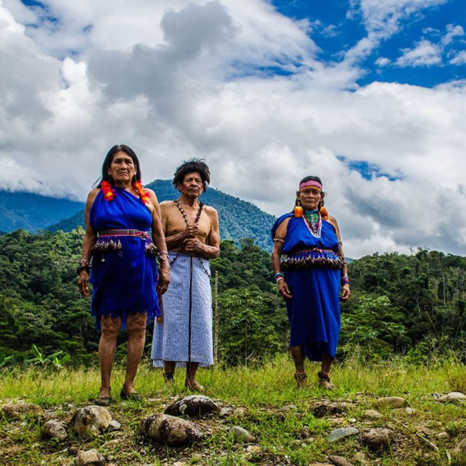
30 Años Comprometidos con la Naturaleza
Lo que hemos alcanzado en 30 años
Hemos trabajado con 94 pueblos indígenas y comunidades locales
361 alianzas estratégicas para la conservación
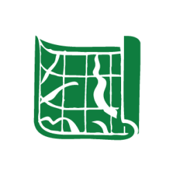
11.9 millones de hectáreas protegidas
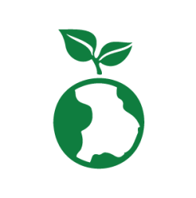
4.2B t CO2e almacenado
470 especies de vertebrados bajo amenazada protegidas
8.9 millones de hectáreas dentro de KBAs
Puntos de inflexión para la naturaleza y las comunidades locales
Reconocimiento oficial del primer Corredor Transfronterizo por la conservación de la biodiversidad de la región.
Conoce más sobre este esfuerzo entre 2 países →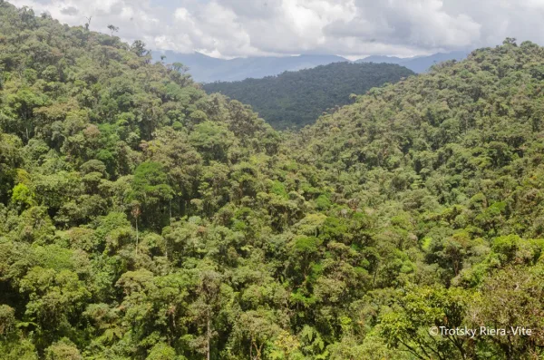
Creación del Área de Protección Hídrica, Runahurco, la segunda más extensa en Ecuador.
Descubre este territorio clave para la conservación hídrica de Ecuador →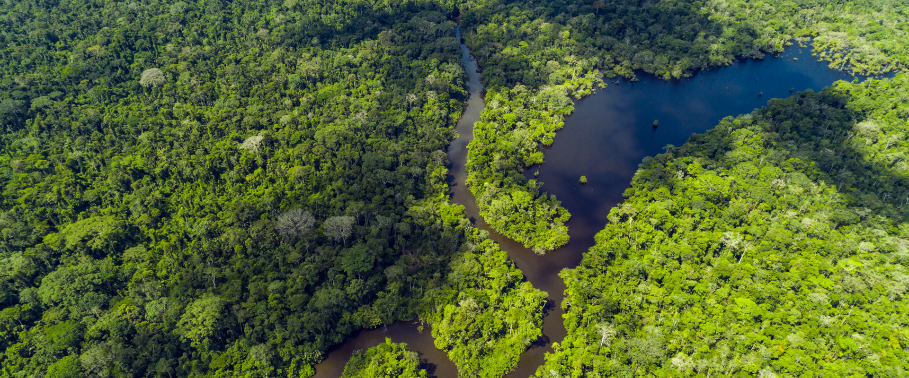
Establecimiento del Territorio de Vida y Uso Ancestral Tarímiat Pujutaí Nunka.
Conoce más sobre esta creación histórica →Comprometidos con
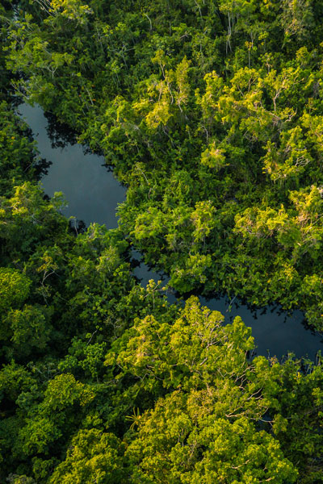
Los Bosques
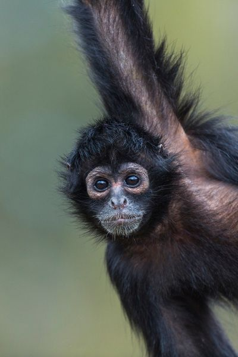
La Biodiversidad
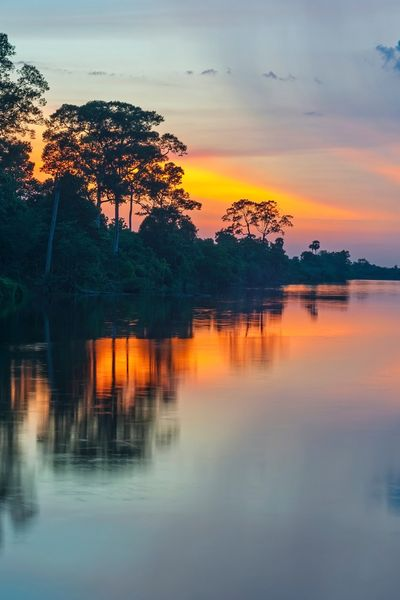
El Clima
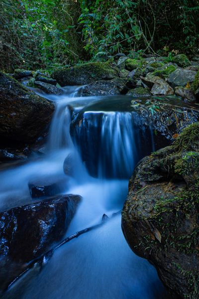
El Agua
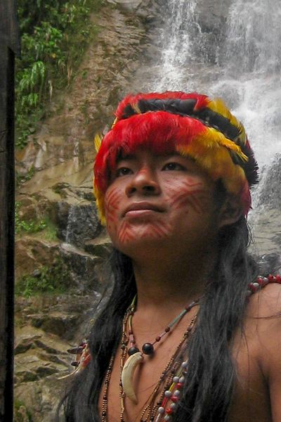
Las Comunidades Locales
Nuestros fundadores Ivan Gayler y Renzo Paladines
Celebramos hoy, el trabajo que comenzó con una creencia simple pero poderosa: que proteger la naturaleza requiere colaboración, confianza y un compromiso a largo plazo.
30 años después, esa visión continúa guiando nuestros esfuerzos mientras trabajamos junto a comunidades y aliados para proteger algunos de los paisajes con mayor biodiversidad del mundo.
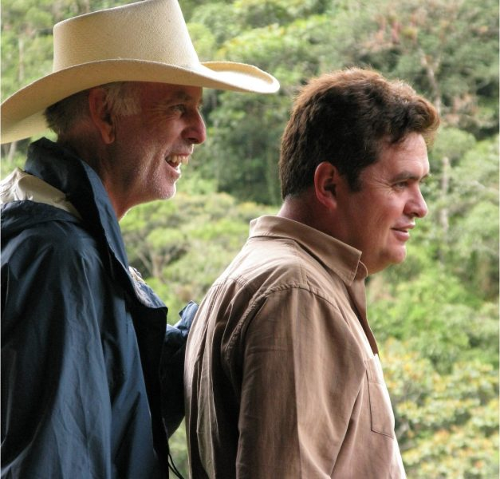
Gracias por ser parte de este camino
A nuestros fundadores, donantes, aliados, comunidades locales y
equipo: gracias.
Estos 30 años son el resultado de un esfuerzo y una convicción
compartida: que la naturaleza y las personas pueden prosperar juntas
Los Desafíos continúan nuestra Determinación también
Los próximos 30 años comienzan ahora
La deforestación, las presiones climáticas y la pérdida de biodiversidad se están intensificando. Lo que ocurra en la próxima década determinará el futuro de toda la vida en nuestro planeta.
Seguimos comprometidos con la naturaleza, con las comunidades y con los territorios vivos que sostienen la vida.
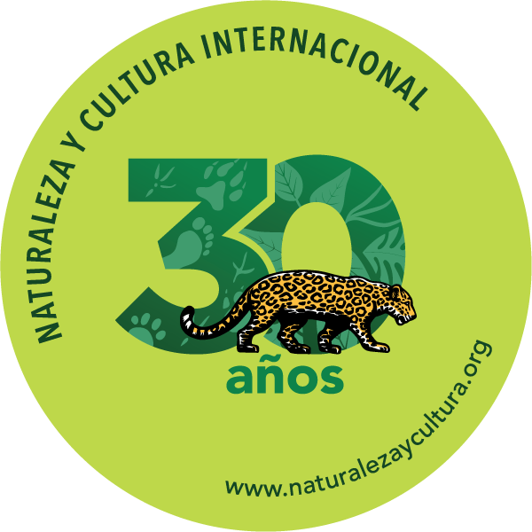
Financieros y
Reportes Medios de
Comunicación Publicaciones Investigaciones Contáctanos Políticas de
Privacidad
Internacional
Naturaleza y Cultura
Internacional
es una
organización
no
gubernamental 501 (c) (e)
EIN: 33-0773524
Del Mar, CA 92014, USA Llámanos +1 (858) 259-0374 Escríbenos hola@naturalezaycultura.org Síguenos en Redes Sociales